Historical and reference coats of arms


Philadelphia
Guide. Places in this edition: 34.
OTIUM is the practice of deliberate leisure. In the classical sense, otium is not escape from work but time when attention returns to memory, landscape, and thought — without a utilitarian deadline.
We shape routes for lingering, not for checklist tourism. The goal is presence in a place rather than consumption of sights.
OTIUM is not a tour operator. It is an invitation to walk, pause, and leave a route unfinished if the light on a façade deserves another minute.
Historical and reference coats of arms
Guide. Places in this edition: 34.
Benjamin Franklin Parkway

The Barnes Foundation, located on the Benjamin Franklin Parkway in Philadelphia, is a renowned art institution housing an exceptional collection of Impressionist, Post-Impressionist, and early Modern paintings. Founded by Dr. Albert C. Barnes in 1922, the foundation is not only a museum but also a center for education and appreciation of the arts, featuring over 4,000 objects, including works by Renoir, Cézanne, and Matisse. Visitors can explore the beautifully designed galleries and gardens, making it a serene spot for art lovers and casual visitors alike. The Barnes Foundation houses over 4,000 objects, including paintings, sculptures, and decorative arts. Notable artists in the collection include Renoir, Cézanne, Matisse, and Picasso. Holds Albert C. Original Merion campus designed as an educational experiment in viewing.
The Barnes Foundation was established in 1922 by Dr. Albert C. Barnes, who aimed to promote the appreciation of art and provide educational opportunities. Originally located in Merion, Pennsylvania, the foundation moved to its current location on the Benjamin Franklin Parkway in 2012. The collection was assembled by Barnes himself and reflects his unique vision of art education and appreciation. Moved from Lower Merion after legal disputes; Parkway building replicates room layouts and hangings. Culturally, the Barnes Foundation plays a pivotal role in Philadelphia's artistic landscape, showcasing a diverse collection that emphasizes the importance of art in daily life. The foundation's commitment to education and community engagement has made it a vital resource for understanding art history and fostering appreciation among the public. Its unique approach to displaying art has influenced museum practices worldwide, making it a significant cultural institution. One of the densest concentrations of Renoir, Cézanne, and Matisse in the world.
Schuylkill River
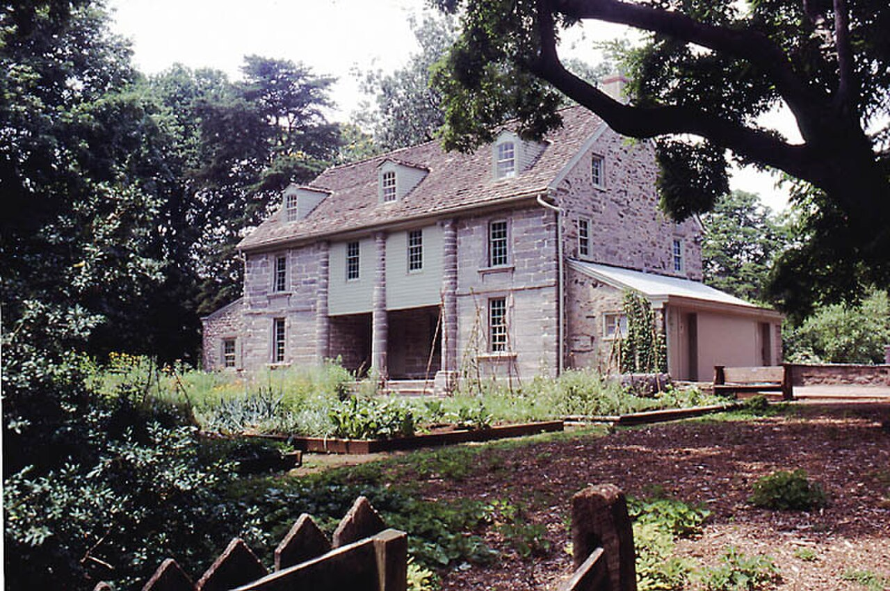
Bartram's Garden is a serene oasis located along the Schuylkill River in Philadelphia, offering visitors a glimpse into the natural beauty and historical significance of the area. Established in the 18th century, it is the oldest surviving botanical garden in North America, featuring a diverse collection of plants and scenic landscapes. The garden serves as a peaceful retreat for both locals and tourists, providing educational programs and community events throughout the year. Founded in 1728 by John Bartram, making it the oldest botanical garden in North America. Designated a National Historic Landmark in 1960. Home of botanist John Bartram and family nursery business. Oldest surviving botanic garden in North America.
Bartram's Garden was founded in 1728 by John Bartram, a renowned botanist who was appointed the King’s Botanist for North America. The garden became a hub for plant exploration and cultivation, showcasing Bartram's extensive collection of native and exotic species. It was officially designated as a public park in the 19th century, and has since played a vital role in the preservation of botanical heritage. Bartram supplied plants to European collectors in the 18th century. Culturally, Bartram's Garden is significant as a site of historical botanical research and education, reflecting Philadelphia's rich heritage in science and exploration. The garden is a vital green space that contributes to the community's quality of life, hosting various cultural events and educational programs that promote environmental awareness. Its historical importance is recognized in its designation as a National Historic Landmark. Quiet riverfront contrast to Center City historic core.
Arch Street
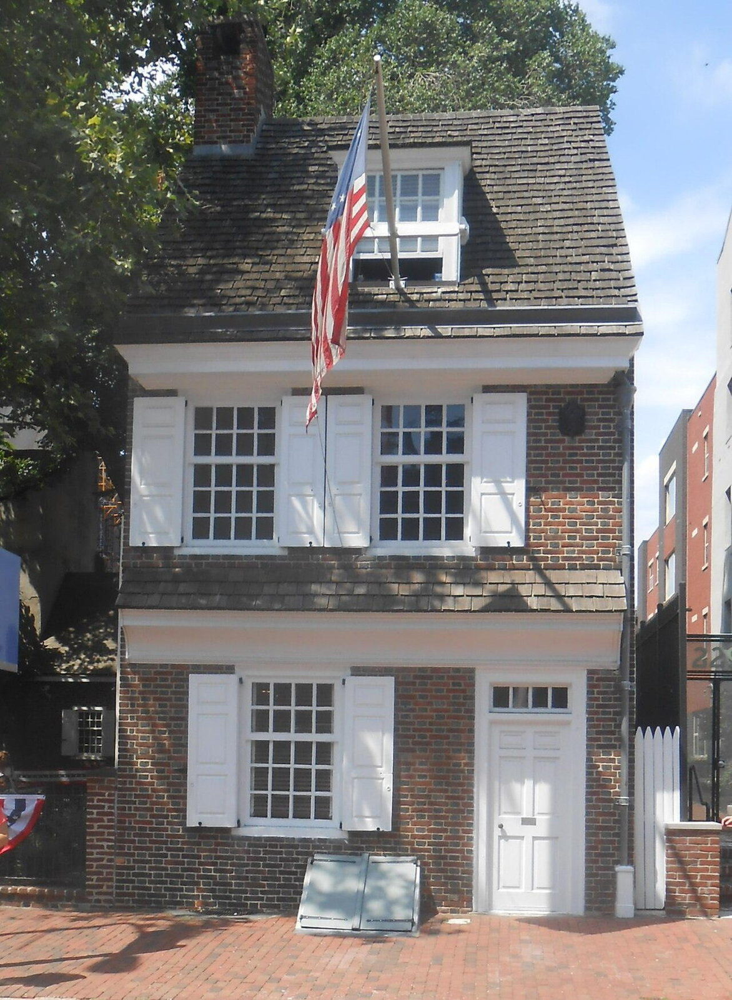
The Betsy Ross House, located on Arch Street in Philadelphia, is a historic site dedicated to the life of Betsy Ross, who is famously credited with sewing the first American flag. Visitors can explore the house, which dates back to 1740, and learn about Ross's contributions to American history through exhibits and guided tours. Tradition links Ross to an early stars-and-stripes flag; historians debate details. Operated as a house museum since the 19th century.
The Betsy Ross House was built in 1740 and is believed to be the residence of Betsy Ross from 1773 to 1786. It is here that she allegedly crafted the first American flag in 1776, a symbol of the nation's independence. The house was designated a National Historic Landmark in 1955. Small colonial-era home interpreted around upholsterer Betsy Ross and Revolutionary-era craft. Culturally, the Betsy Ross House represents an important piece of American heritage, symbolizing the spirit of independence and the role of women in the American Revolution. The site attracts numerous visitors each year, contributing to Philadelphia's identity as a city rich in revolutionary history. It also serves as a venue for educational programs and events that celebrate American traditions. Popular Old City stop on the freedom trail circuit.
Schuylkill River

Boathouse Row is a picturesque stretch along the Schuylkill River, renowned for its charming Victorian boathouses that house rowing clubs and serve as a vibrant hub for both competitive and recreational rowing. Illuminated at night, the boathouses create a stunning reflection on the water, making it a popular spot for both locals and tourists alike to enjoy leisurely walks and scenic views. Boathouse Row consists of 15 historic boathouses along the Schuylkill River. The boathouses are part of the Schuylkill River Historic District, listed on the National Register of Historic Places. Home to rowing clubs and regatta history on the Schuylkill. Lit at night as a skyline signature.
Boathouse Row's origins date back to the late 19th century, with the first boathouse constructed in 1860. The area became a focal point for rowing in Philadelphia, particularly after the establishment of the Schuylkill Navy in 1858, which organized rowing competitions and events. Over the years, the boathouses have been preserved and maintained, reflecting the city's commitment to its sporting heritage. Developed as clubs built individual boathouses along the riverbank; preserved as a historic district. Culturally, Boathouse Row is a symbol of Philadelphia's rich rowing tradition and serves as a gathering place for the community, fostering a sense of camaraderie and competition. The area is also significant for its architectural beauty, showcasing a variety of styles that reflect the city's history. While it does not hold political or religious significance, it plays an important role in the daily lives of Philadelphians, offering recreational opportunities and a scenic escape from urban life. Heart of Philadelphia rowing culture and Fairmount views.
2nd Street, Old City

Christ Church, located on 2nd Street in Philadelphia's historic Old City, is a stunning example of colonial architecture and a vital part of the city's rich heritage. Founded in 1695, this Anglican church has played a significant role in the religious and civic life of Philadelphia. Visitors can admire its beautiful interior, including the iconic steeple, and learn about its historical connections to key figures in American history. Founded in 1695, Christ Church is one of the oldest churches in Pennsylvania. The church's steeple was added in 1754 and stands as a notable feature of the Philadelphia skyline. George Washington and many founders rented pews here. Steeple once dominated the colonial skyline.
Christ Church was established in 1695 by a group of Anglicans who sought to create a place of worship in the growing colony of Pennsylvania. The church was designed by architect Robert Smith and completed in 1744, becoming a prominent site for worship and community gatherings. It was here that many Founding Fathers, including George Washington and Benjamin Franklin, attended services, making it a significant landmark in the history of the United States. Congregation dates to 1695; current building by Robert Smith. As a place of worship, Christ Church holds deep religious significance for the Anglican community and serves as a reminder of the early religious freedoms sought by settlers in America. Culturally, it is a symbol of Philadelphia's colonial past and has been a site for various community events and celebrations throughout the years. The church is also part of the Historic Christ Church and Burial Ground, which collectively reflect the city's rich heritage and commitment to preserving its historical sites. Active parish church and Revolutionary-era heritage site.
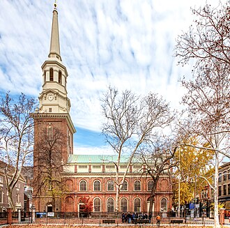
Christ Church Philadelphia, a historic Anglican church located in the Old City neighborhood, is renowned for its stunning Georgian architecture and rich history. Established in 1695, it played a pivotal role in the early development of the city and remains an active place of worship today. Visitors can explore its beautiful interior, including the impressive stained glass windows and the original pews used by prominent figures of American history. Founded in 1695, making it one of the oldest churches in Pennsylvania. The church was designed by architect Robert Smith and completed in 1744. Notable figures such as George Washington and Benjamin Franklin attended services here.
Christ Church was founded in 1695 and is one of the oldest churches in Pennsylvania. It was designed by architect Robert Smith and completed in 1744. The church has been a witness to significant events, including the American Revolution, and served as a gathering place for many Founding Fathers, including George Washington and Benjamin Franklin. The church holds considerable cultural and historical significance as a symbol of Philadelphia's early colonial life and the American Revolution. It is part of the Independence National Historical Park and attracts many visitors interested in the nation's heritage. Christ Church also serves as a vital community center, hosting various events and services that reflect the ongoing traditions of the Anglican faith.
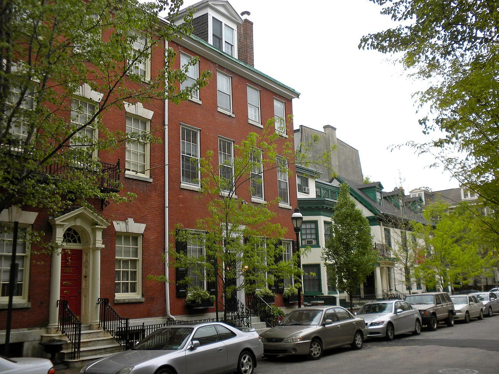
Center City

The Comcast Center, located in the heart of Center City Philadelphia, is a striking skyscraper that serves as the headquarters for Comcast Corporation. Completed in 2008, it stands as the tallest building in Pennsylvania, offering stunning views of the city and a vibrant public space at its base. Visitors can enjoy the impressive LED video wall in the lobby and the nearby plaza, which hosts various events throughout the year. The Comcast Center is 1,121 feet tall, making it the tallest building in Pennsylvania. The building features a 2,000-square-foot LED video wall in its lobby, one of the largest in the world. It was designed by the architectural firm Robert A.M. Tallest building in Philadelphia at completion. Lobby features a programmable LED art wall.
The Comcast Center was officially opened on June 14, 2008, and was designed by architect Robert A.M. Stern. It replaced the former Gimbels department store and has since become a symbol of Philadelphia's modern skyline. The building's construction was part of a broader revitalization effort in the Center City area. Anchors Comcast's headquarters campus; second tower added later nearby. As the headquarters of Comcast, one of the largest media and technology companies in the world, the Comcast Center plays a crucial role in Philadelphia's economy and cultural landscape. The building is a hub for innovation and technology, reflecting the city's ongoing evolution as a center for business and media. Additionally, the Comcast Center hosts public art installations and community events, contributing to the cultural vibrancy of the area. Symbol of 21st-century Center City business district.
Fairmount Avenue
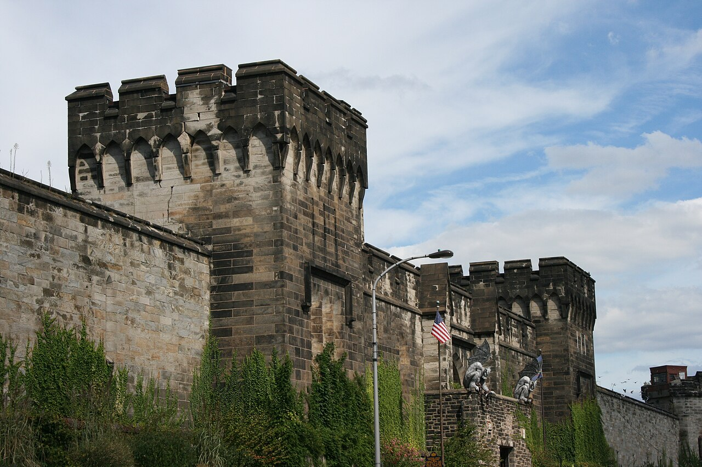
Eastern State Penitentiary, located on Fairmount Avenue in Philadelphia, is a historic former prison renowned for its grand Gothic architecture and innovative design. Opened in 1829, it was the first prison to implement a system of separate confinement, influencing penitentiary systems worldwide. Today, it serves as a museum, offering visitors a glimpse into its storied past and the evolution of the American criminal justice system. Opened in 1829, Eastern State Penitentiary was the first prison to use a system of solitary confinement. The prison was designed to hold up to 1,700 inmates but eventually housed around 3,000 at its peak. Pioneered separate-cell penitentiary design in the U.S. Closed in 1971; now a stabilized ruin museum.
Eastern State Penitentiary was founded in 1829 and was operational until 1971. It was designed by architect John Haviland and was notable for its revolutionary approach to incarceration, emphasizing rehabilitation over punishment. The prison housed notorious criminals, including Al Capone, and witnessed significant events in prison reform and the treatment of inmates throughout its history. Influenced prison architecture worldwide; housed Al Capone briefly in a comparatively plush cell. Culturally, Eastern State Penitentiary has become a symbol of the American penal system's evolution and is recognized for its architectural significance. It attracts artists and historians alike, serving as a venue for art installations and events that reflect on issues of justice and incarceration. The site is also a popular tourist attraction, contributing to Philadelphia's heritage and engaging the public in discussions about crime and punishment. National Historic Landmark framing debates on incarceration.
Old City

Elfreth's Alley, often referred to as the oldest continuously inhabited street in America, is a charming historic lane nestled in Philadelphia's Old City. With its cobblestone path and well-preserved 18th-century homes, it offers a glimpse into colonial life and the city’s rich architectural heritage. Visitors can stroll through this picturesque alley, which is lined with vibrant flower boxes and period architecture, making it a perfect spot for photography and exploration. Established in 1702, making it the oldest continuously inhabited street in America. Features 32 historic homes, many of which date back to the early 18th century. Often called the oldest continuously inhabited residential street in the U.S. Named for blacksmith Jeremiah Elfreth.
Elfreth's Alley was established in 1702 and named after Jeremiah Elfreth, a blacksmith who was one of the first residents. The alley originally served as a home for artisans and craftsmen, reflecting the early economic activities of the city. Over the years, it has maintained its historical integrity, with many of the buildings dating back to the early 18th century, showcasing the evolution of Philadelphia’s architectural styles. Homes for tradespeople and artisans from the early 18th century onward; preserved as a museum street. Culturally, Elfreth's Alley is a vital part of Philadelphia's heritage, representing the city's colonial past and the lives of its early residents. It is recognized for its unique architectural significance and is a popular site for heritage tourism, drawing visitors interested in American history. The alley is also home to the Elfreth's Alley Museum, which provides insights into the daily lives of the families who lived there, further enriching its cultural importance. Rare intact slice of pre-industrial Philadelphia street life.
Schuylkill banks

The Fairmount Water Works is a historic site located along the Schuylkill River in Philadelphia, renowned for its picturesque architecture and significance in the development of urban water supply systems. Once a vital source of drinking water for the city, it now serves as a beautiful park and educational center, offering stunning views and a glimpse into Philadelphia's engineering history. The Fairmount Water Works was designed in the Neoclassical style and features a series of elegant buildings and waterworks. It was designated a National Historic Landmark in 1976 due to its historical and architectural significance. Early municipal water pumping station with picturesque buildings. Now an environmental education center.
Founded in 1812, the Fairmount Water Works was designed by architect Frederick Graff and was one of the first municipal water systems in the United States. It played a crucial role in providing clean water to Philadelphia, particularly during outbreaks of cholera in the 19th century. The facility was operational until 1909, after which it was repurposed and restored as a public space. Engineered water supply for a growing city; later superseded but preserved. The Fairmount Water Works holds cultural significance as a symbol of Philadelphia's commitment to public health and urban infrastructure. It reflects the city's rich engineering heritage and has become a popular site for recreation and education, promoting awareness of water conservation and environmental stewardship. The site also features public art installations and hosts community events, further embedding it in the daily life of Philadelphia residents. Framed views toward the Philadelphia Museum of Art upstream.
Delaware River
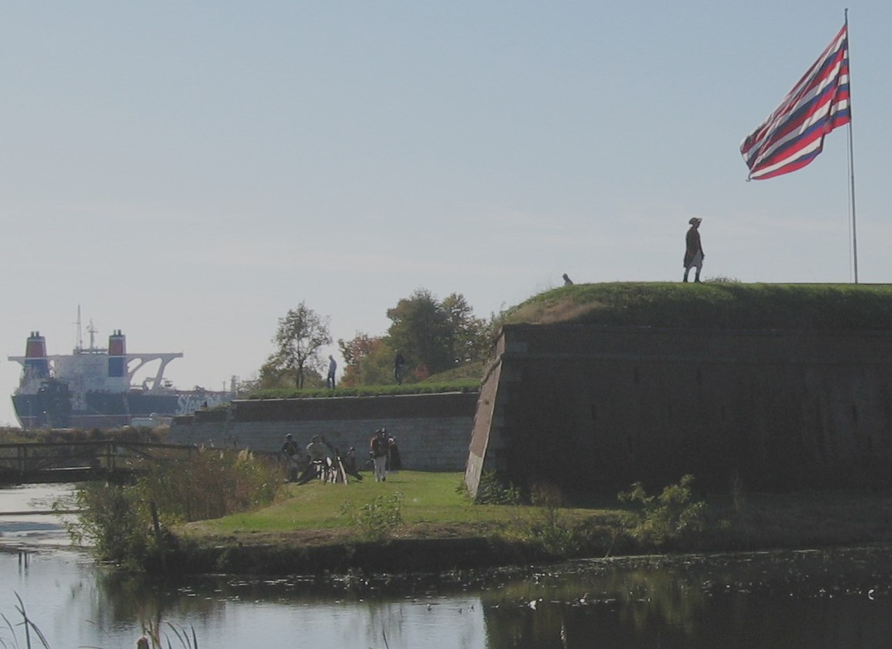
Fort Mifflin, located along the Delaware River in Philadelphia, is a historic military fortification dating back to the American Revolutionary War. Visitors can explore its well-preserved structures and learn about its role in defending the city during key battles. The fort offers a glimpse into the past with reenactments and educational programs that highlight its significance in American history. Fort Mifflin was built between 1771 and 1776. It was the site of the Siege of Fort Mifflin in 1777 during the Revolutionary War. The fort was decommissioned in the 1960s and is now a historic site. Siege here in 1777 delayed British supply ships. Used through WWII as coastal defense and prison.
Fort Mifflin was constructed between 1771 and 1776 and played a crucial role during the Revolutionary War, particularly during the Siege of Fort Mifflin in 1777. The fort was designed to protect the city of Philadelphia from British naval attacks and was the site of fierce fighting. After the war, it continued to serve various military purposes until its decommissioning in the 1960s. Built on Mud Island to guard Philadelphia's river approach. The fort holds cultural significance as a symbol of American resilience and military history. It has been preserved as a historic site, attracting visitors interested in the heritage of Philadelphia and the Revolutionary War. Fort Mifflin serves as a reminder of the struggles for independence and the importance of defense in shaping the nation. Rare intact Revolutionary-era fortification in the city.
Chestnut Street
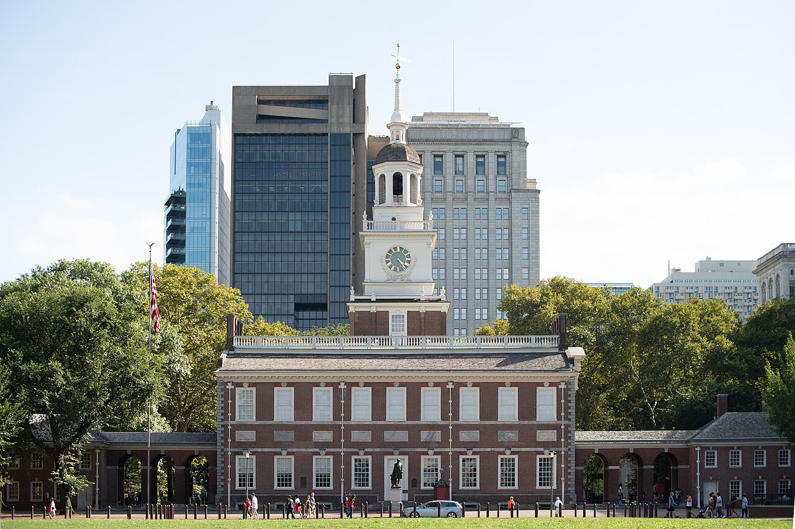
Independence Hall, located on Chestnut Street in Philadelphia, is a historic landmark where both the Declaration of Independence and the United States Constitution were debated and adopted. This iconic building, part of the Independence National Historical Park, attracts visitors eager to explore the birthplace of American democracy. Its stunning Georgian architecture and rich history make it a must-see for anyone interested in the foundations of the United States. Both the Declaration and Constitution were debated and signed here. UNESCO World Heritage Site with related historic park structures.
Independence Hall was originally built as the Pennsylvania State House between 1732 and 1753. It served as the meeting place for the Second Continental Congress from 1775 to 1783, where the Declaration of Independence was adopted on July 4, 1776. Additionally, the Constitutional Convention convened here in 1787, leading to the drafting of the United States Constitution. Built as the Pennsylvania State House; served as capitol for Pennsylvania and meeting place of the Second Continental Congress. Independence Hall holds immense political significance as the site where foundational documents of the United States were created, marking the country's break from British rule and establishing a framework for governance. The building symbolizes the ideals of liberty and democracy, making it a focal point for various protests and movements advocating for civil rights and social justice throughout American history. Its designation as a UNESCO World Heritage Site further underscores its cultural importance. Birthplace documents of the United States are associated with this chamber.
South 9th Street

The Italian Market, located on South 9th Street in Philadelphia, is one of the oldest and most vibrant outdoor markets in the United States. Known for its rich array of fresh produce, meats, cheeses, and authentic Italian delicacies, this bustling market offers a unique glimpse into the city's diverse culinary heritage. Visitors can explore a variety of shops, eateries, and vendors, making it a must-visit destination for food lovers and cultural enthusiasts alike. The Italian Market is one of the oldest outdoor markets in the United States. It has been a center for Italian-American culture since the late 19th century. One of the oldest continuous outdoor markets in the U.S. Mix of Italian-American heritage and newer immigrant vendors.
The Italian Market traces its roots back to the late 19th century when Italian immigrants settled in the area, bringing with them their culinary traditions. Originally known as 9th Street Market, it became a hub for Italian goods and culture, particularly during the early 20th century. Over the decades, the market has evolved but has maintained its identity as a center for Italian-American culture. Grew with South Philadelphia immigration; featured in film and food tourism. Culturally, the Italian Market is a testament to Philadelphia's rich immigrant history and serves as a vibrant gathering place for the community. It reflects the city's diverse heritage through its array of food offerings and cultural events, including the annual Feast of the Assumption, which celebrates Italian traditions. The market not only plays a crucial role in daily life for locals but also attracts visitors from around the world, contributing to Philadelphia's reputation as a culinary destination. Working neighborhood market, not only a tourist strip.
Independence National Historical Park
The Liberty Bell, an iconic symbol of American independence, is located in Independence National Historical Park in Philadelphia. Renowned for its distinctive crack, the bell is a must-see for visitors interested in the nation's history and ideals of freedom. It attracts millions each year, serving as a poignant reminder of the struggles for liberty throughout American history. The Liberty Bell weighs approximately 2,080 pounds. It is made of a bronze alloy consisting of 70% copper, 20% tin, and 10% silver. Cast in London; cracked early in its American life. Housed in a secure, climate-controlled pavilion since 2003.
The Liberty Bell was originally cast in 1752 and was intended for the Pennsylvania State House. It gained prominence after being rung on July 8, 1776, to mark the reading of the Declaration of Independence. Over the years, it has become a symbol of the American Revolution and the quest for freedom. Hung in the Pennsylvania State House (Independence Hall) tower; adopted as a symbol of liberty and later of abolition. Politically, the Liberty Bell represents the ideals of democracy and the fight for independence from British rule. Culturally, it has become a symbol of American heritage and is celebrated for its role in the nation's founding. The bell is also associated with various movements advocating for civil rights and social justice, making it a powerful emblem of liberty and equality. One of the most visited objects of the American Revolution story in Philadelphia.
John F. Kennedy Plaza
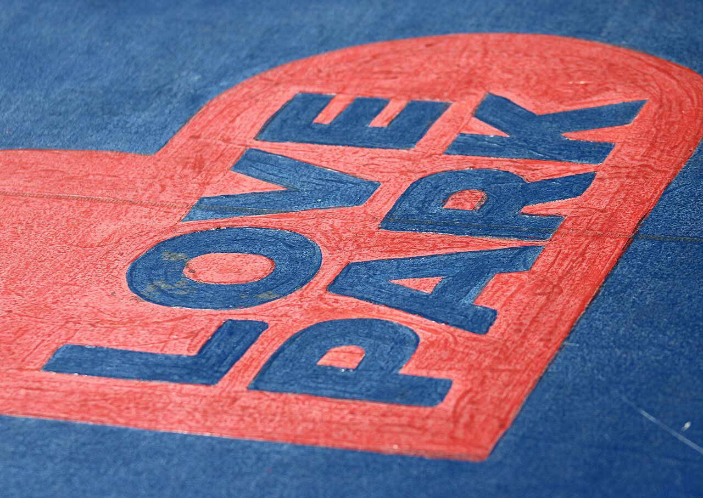
LOVE Park — park in Philadelphia, United States of America. Robert Indiana's LOVE image is among the most photographed icons in town. Plaza redesigned with updated fountain and seating.
JFK Plaza opened in 1965; LOVE installed for the Bicentennial and later recast on site. Default meeting point and symbol of Philadelphia pride.
Old City

The Museum of the American Revolution in Philadelphia offers an immersive experience into the events and figures that shaped the United States. Visitors can explore a vast collection of artifacts, interactive exhibits, and engaging storytelling that bring the Revolutionary War to life. Located in the historic Old City, the museum serves as a vital resource for understanding America's founding principles and the struggle for independence. The museum features over 100 artifacts, including a rare 1776 printing of the Declaration of Independence. It includes a life-sized replica of George Washington's tent used during the Revolutionary War. Displays Washington's war tent in a dedicated theater experience. Artifacts span soldiers, loyalists, and Native nations.
The Museum of the American Revolution opened its doors on April 19, 2017, marking the 242nd anniversary of the Battles of Lexington and Concord. The museum is situated near key historical sites such as Independence Hall and the Liberty Bell, emphasizing Philadelphia's role as a central hub during the American Revolution. Its creation was driven by a desire to preserve and interpret the complex narratives surrounding the Revolution and its impact on American identity. Opened to tell inclusive narratives of the Revolutionary era near Independence Hall. The museum plays a crucial role in educating the public about the political landscape of the Revolutionary War, highlighting the struggles for power and governance that defined the era. It serves as a cultural landmark, celebrating the heritage of American democracy and fostering a deeper understanding of the nation's origins. Through its exhibits, the museum encourages reflection on contemporary issues related to freedom and civic responsibility. Complements older sites with narrative exhibits and programming.
College of Physicians
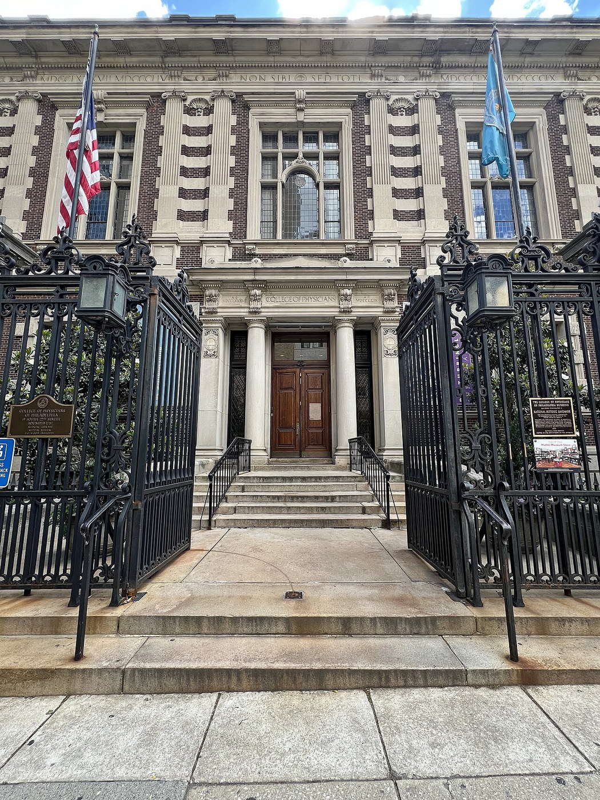
It contains a collection of anatomical and pathological specimens, wax models, and antique medical equipment. The museum is part of The College of Physicians of Philadelphia. Medical history museum with anatomical and pathological specimens. Not for the squeamish; aimed at education and research.
Grew from the College of Physicians of Philadelphia collections. Internationally known cabinet-of-curiosities medical museum.
Independence Mall
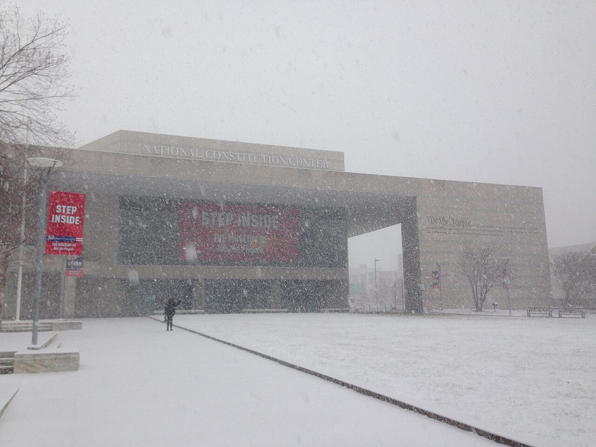
The National Constitution Center, located on Independence Mall in Philadelphia, is a premier museum dedicated to the U.S. Constitution. It offers engaging exhibits, interactive displays, and educational programs that explore the Constitution's history and its ongoing impact on American democracy. Visitors can also view the iconic Signers' Hall, featuring life-size statues of the Founding Fathers. The National Constitution Center is the only museum in the United States dedicated to the U.S. It is located on Independence Mall, near other historic sites such as the Liberty Bell and Independence Hall. Interactive exhibits on the U.S. Sits opposite Independence Mall green space.
The National Constitution Center was established in 2003, marking a significant addition to Philadelphia's rich historical landscape. It was created to commemorate the Constitution and to educate the public about its significance, aligning with the city's historical role as the birthplace of American democracy. Created as a non-partisan civic education institution. As a central hub for constitutional education, the National Constitution Center plays a vital role in promoting civic engagement and understanding of democratic principles. It hosts discussions, lectures, and events that reflect on the Constitution's relevance in contemporary society, making it a key player in the cultural and political discourse surrounding American governance. Anchors the mall between Independence Hall and the Liberty Bell.
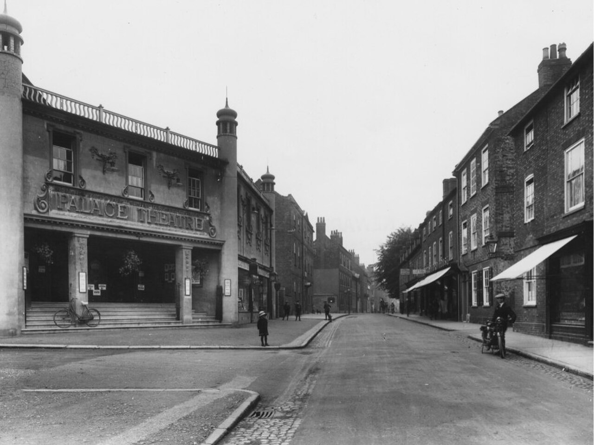
Broad Street
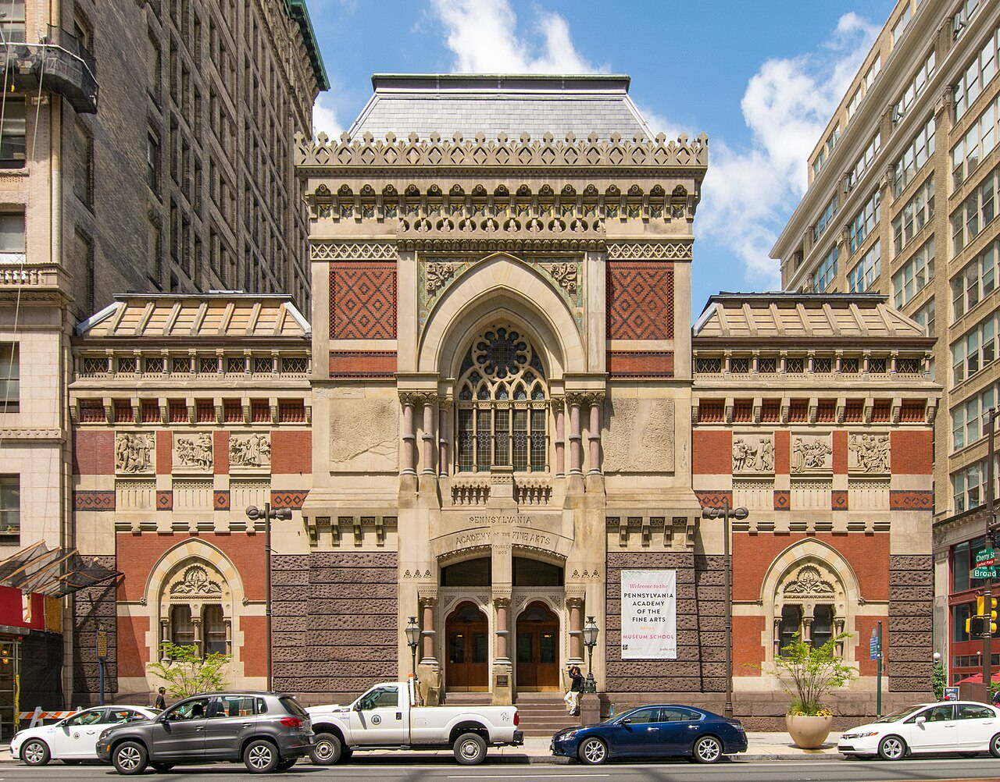
Pennsylvania Academy of the Fine Arts — museum and art school in Philadelphia, Pennsylvania. America's first art museum and school building combined. Frank Furness façade is a High Victorian landmark.
Founded 1805; building anchors North Broad's cultural institutions. Training ground for American artists including Thomas Eakins.
Center City

Philadelphia City Hall is an iconic landmark located in the heart of Center City. Completed in 1901, it stands as a testament to the grandeur of 19th-century architecture, featuring a stunning clock tower topped by a statue of the city's founder, William Penn. Visitors can explore its intricate stonework and enjoy panoramic views of the city from the observation deck. Philadelphia City Hall is the largest municipal building in the United States. The statue of William Penn atop the tower is 37 feet tall and was the tallest statue on a building in the United States until 1987. William Penn statue atop was long the tallest point in the city by gentleman's agreement. Largest municipal building in the U.S. by floor area when completed.
Construction of Philadelphia City Hall began in 1871 and was completed in 1901, making it one of the largest municipal buildings in the United States. Designed by architect John McArthur Jr., the building reflects the Second Empire style and was the tallest building in the world at the time of its completion. The site has been a focal point for various historical events, including political gatherings and civic celebrations. Designed by John McArthur Jr.; decades-long construction centered Philadelphia's civic life at Penn Square. As the seat of Philadelphia's government, City Hall plays a crucial role in the city's political landscape. It has been the backdrop for numerous protests and civic movements, reflecting the evolving social and political issues of the time. Culturally, the building is a symbol of Philadelphia's rich heritage, attracting artists and photographers who appreciate its architectural beauty and historical context. Defines Center City skyline and anchors the Broad Street cultural corridor.
South Street
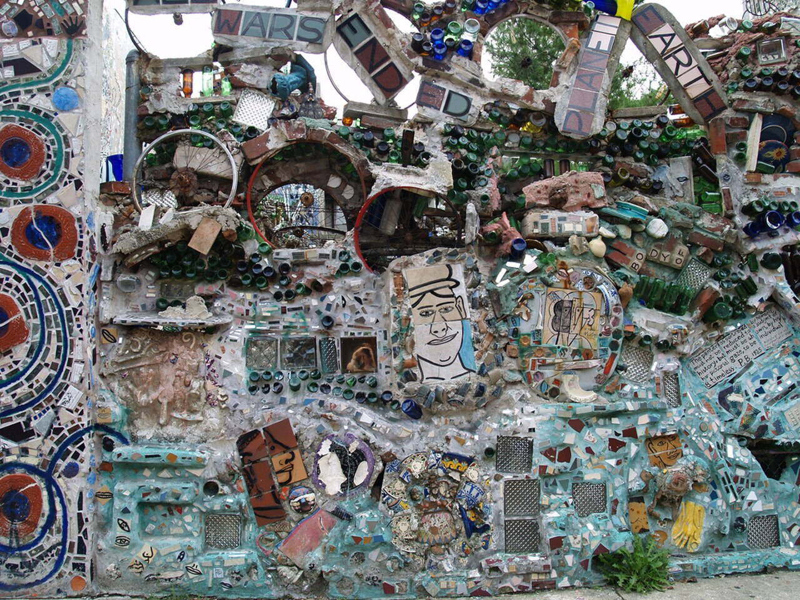
Philadelphia Magic Gardens is a vibrant, immersive art installation located on South Street, created by artist Isaiah Zagar. This unique space features a stunning mosaic of tiles, glass, and found objects, inviting visitors to explore its winding pathways and intricate artwork. It serves as both a gallery and a community space, showcasing the creativity and spirit of Philadelphia. The gardens cover an area of about half a city block. Isaiah Zagar has created over 200 mosaics throughout the city. Indoor-outdoor labyrinth of glass, pottery, and mirror shards. Artist-led nonprofit maintains the site.
Philadelphia Magic Gardens was founded in 2002 by Isaiah Zagar, who began creating mosaics in the area in the 1960s. The gardens span half a city block and were developed over several decades, culminating in the installation's official opening to the public in 2008. Isaiah Zagar began South Street mosaics in the 1990s; saved from development by community campaign. The Magic Gardens play a crucial role in Philadelphia's cultural landscape, reflecting the city's rich artistic heritage and community spirit. It serves as a gathering place for local events and educational programs, fostering creativity and engagement among residents and visitors alike. The gardens are a testament to the power of public art in transforming urban spaces and enhancing daily life. Signature folk-art attraction of the South Street corridor.
Benjamin Franklin Parkway

Perched atop the Fairmount Hill, Philadelphia Museum of Art is one of America's most iconic cultural institutions. Its famous 'Rocky Steps' have become a global symbol of perseverance and inspiration. Opened in 1926, the building was designed by Paul Cret in the Beaux-Arts style. It houses over 230,000 objects across various departments such as painting, sculpture, decorative arts, and photography. The museum’s famous murals by Mural Arts Program depict scenes from local history and culture. Its extensive library contains rare books, prints, and manuscripts dating back centuries. In addition to permanent collections, the museum hosts temporary exhibitions showcasing contemporary artists. Famous “Rocky steps” draw film tourists alongside art visitors. Houses strong American and European painting collections.
Established in 1876, the museum began as a repository for artworks collected by wealthy Philadelphians. Over time it expanded its collection to include works spanning ancient Egyptian artifacts, impressionist paintings, and modern masterpieces. Built on Fairmount hill as part of the Benjamin Franklin Parkway plan; expanded with modern wings later. A must-visit for art lovers, the museum showcases some of the world's greatest treasures including Rodin's 'The Thinker', Matisse's 'Blue Nude', and Van Gogh's 'Irises'. Flagship fine-art museum of the city and a Parkway landmark.
Girard Avenue

Philadelphia Zoo — zoo in Philadelphia, Pennsylvania, United States. Chartered as America's first zoo; opened 1874. Historic gatehouses and animal houses dot the site.
Founded on conservation and education ideals of the 19th century. Major family destination at the park's western edge.
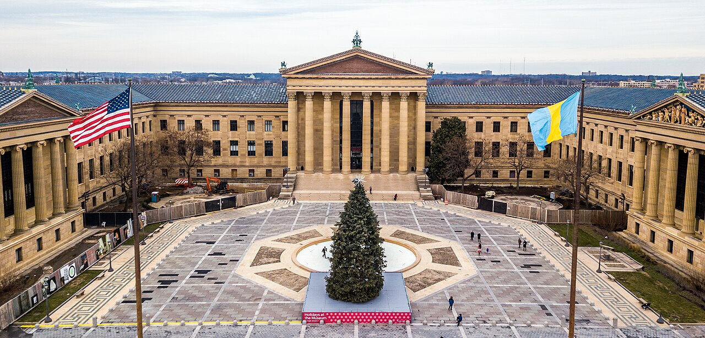
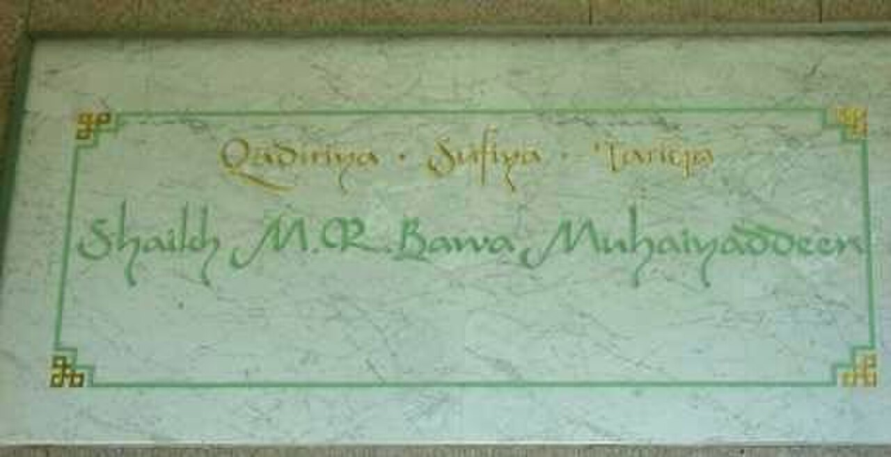
12th Street
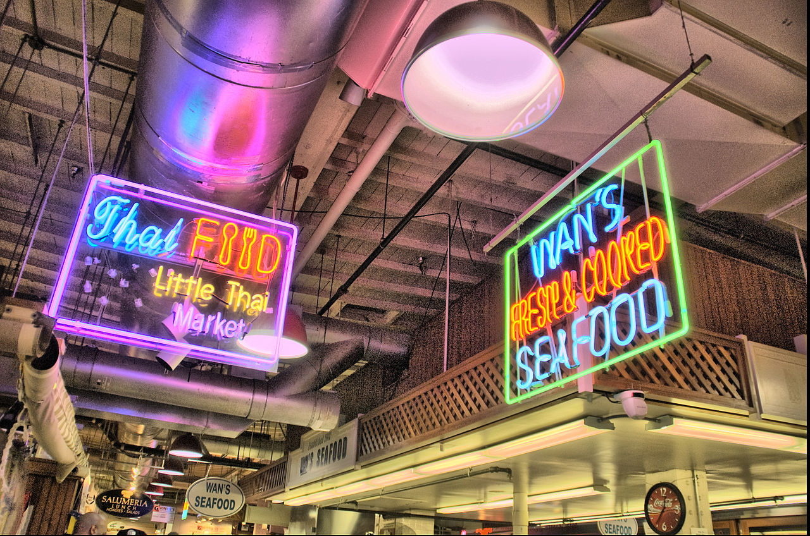
Reading Terminal Market — farmer's market in Philadelphia. Vendors span Amish produce, Pennsylvania Dutch foods, and global cuisines. Operates under the historic Reading Railroad headhouse complex.
Opened in 1893 as a public market within the Reading Terminal train shed. Working public market and daily lunch destination for residents and visitors.
Center City
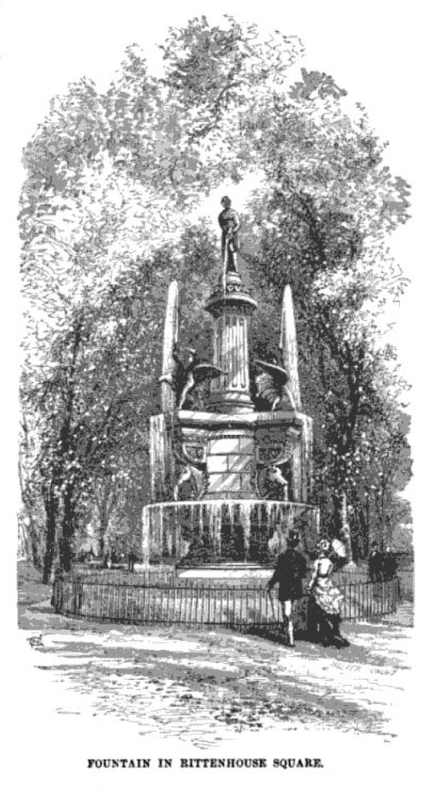
Known for its lush greenery, beautiful landscaping, and lively atmosphere, it serves as a popular gathering spot for locals and visitors alike. The square is surrounded by upscale shops, restaurants, and cultural institutions, making it a central hub for both relaxation and social interaction. Rittenhouse Square is one of the five original squares laid out by William Penn. The square was officially designated as a public park in 1852. It is named after David Rittenhouse, an influential American figure in astronomy and clockmaking. One of William Penn's five original squares. Surrounded by upscale apartments and hotels.
Rittenhouse Square was one of the original five squares planned by William Penn in the late 17th century. It was officially designated as a public park in 1852 and has undergone various transformations over the years, reflecting the changing landscape of Philadelphia. The square is named after David Rittenhouse, an American astronomer and clockmaker, and has been a site for numerous public events and celebrations throughout its history. Named for astronomer David Rittenhouse; gentrified into a genteel park in the 19th century. Culturally, Rittenhouse Square is a cornerstone of Philadelphia life, often hosting art shows, farmers' markets, and community events that reflect the city's vibrant arts scene. The park is a symbol of urban green space, promoting community engagement and providing a serene escape from the bustling city. Its surrounding area is known for its historic architecture and is a focal point for both residents and tourists, contributing to the city's identity. Center of Rittenhouse neighborhood dining and strolling.
Benjamin Franklin Parkway
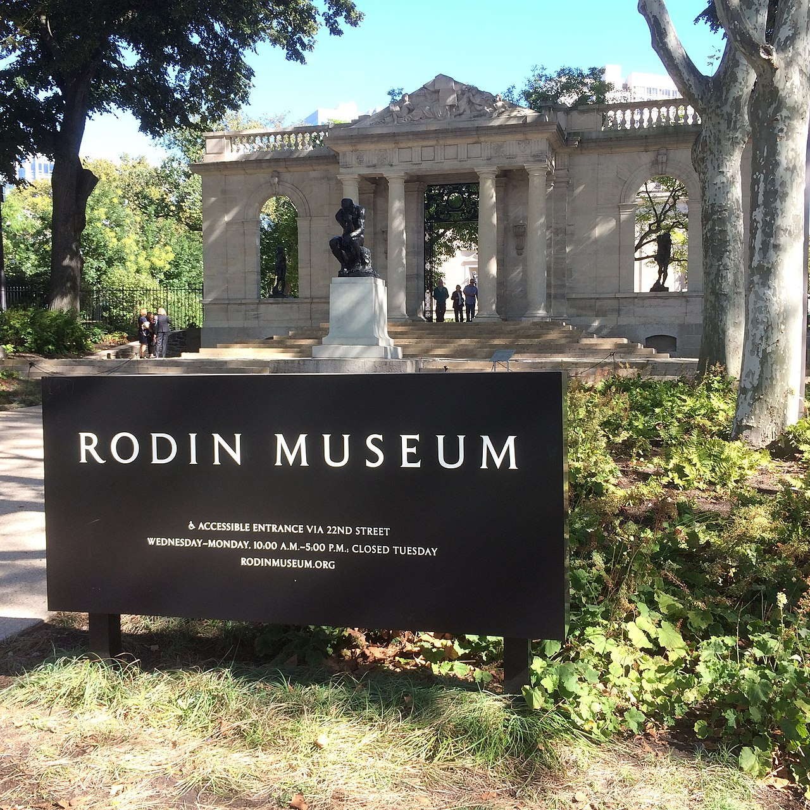
The Rodin Museum in Philadelphia is a serene oasis dedicated to the works of French sculptor Auguste Rodin. Nestled along the Benjamin Franklin Parkway, the museum houses one of the largest collections of Rodin's sculptures outside of France, offering visitors an intimate glimpse into the artist's genius. The museum's beautiful gardens and architecture enhance the experience, making it a perfect spot for art lovers and casual visitors alike. The museum features over 140 works by Auguste Rodin. It was designed by architect Paul Cret and opened in 1929. Holds one of the largest Rodin collections outside Paris. The Thinker marks the courtyard entrance.
The Rodin Museum was established in 1929, thanks to the generosity of philanthropist and art collector Jules E. Mastbaum. It was designed by architect Paul Cret and features a collection that includes over 140 works by Rodin, including iconic pieces like 'The Thinker' and 'The Gates of Hell.' The museum was one of the first in the United States dedicated solely to a single artist. Jules E. Mastbaum commissioned casts and assembled the collection for the city. Culturally, the Rodin Museum plays a vital role in Philadelphia's artistic landscape, contributing to the city's reputation as a hub for the arts. It not only showcases Rodin's masterpieces but also serves as a venue for educational programs and exhibitions that promote artistic appreciation. The museum's commitment to preserving and presenting Rodin's work reflects the broader cultural heritage of Philadelphia, a city known for its rich artistic and historical traditions. Quiet sculpture garden opposite the Parkway's larger museums.
Fairmount Park
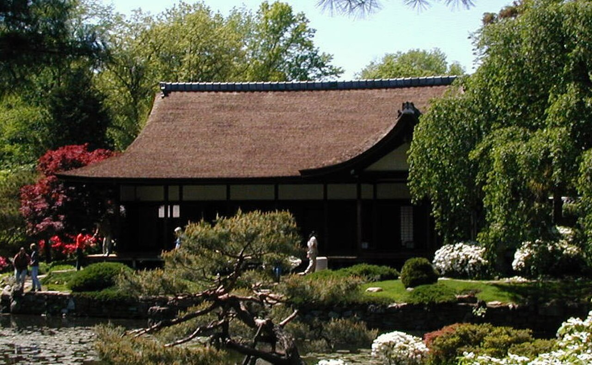
Japanese House and Garden — traditional garden in Fairmount Park, Philadelphia. Nikkō-style shoin house with pond-stroll garden. Gift-related history links to sister-city Nagoya.
Displayed in New York before reassembly in Philadelphia's park. Peaceful cultural contrast within Fairmount Park.
Science museum

The Franklin Institute is a premier science museum located in Philadelphia, dedicated to inspiring a passion for science and technology. With interactive exhibits, a planetarium, and an IMAX theater, it offers engaging experiences for visitors of all ages. Named after Benjamin Franklin, the museum serves as a hub for scientific exploration and education. Founded in 1824, the Franklin Institute is one of the oldest science museums in the United States. The museum is named after Benjamin Franklin, who was a prominent scientist and statesman. Named for Benjamin Franklin; strong hands-on science exhibits. Giant walk-through heart is a generations-old visitor memory.
The Franklin Institute was founded in 1824, making it one of the oldest centers of science education in the United States. It was established in honor of Benjamin Franklin, a key figure in American history known for his contributions to science and civic life. The museum has undergone several expansions and renovations, with significant milestones including the opening of the IMAX theater in 1996 and the renovation of its core exhibits in 2019. Founded 1824; moved to the Parkway in the 1930s and expanded repeatedly. Culturally, the Franklin Institute plays a vital role in Philadelphia's educational landscape, promoting STEM (science, technology, engineering, and mathematics) learning among children and adults alike. It hosts various events, workshops, and exhibitions that reflect the city's commitment to innovation and scientific inquiry. The museum also contributes to the cultural heritage of Philadelphia, attracting millions of visitors each year and enhancing the city's reputation as a center for education and culture. Primary science museum of the region.
Amtrak hub
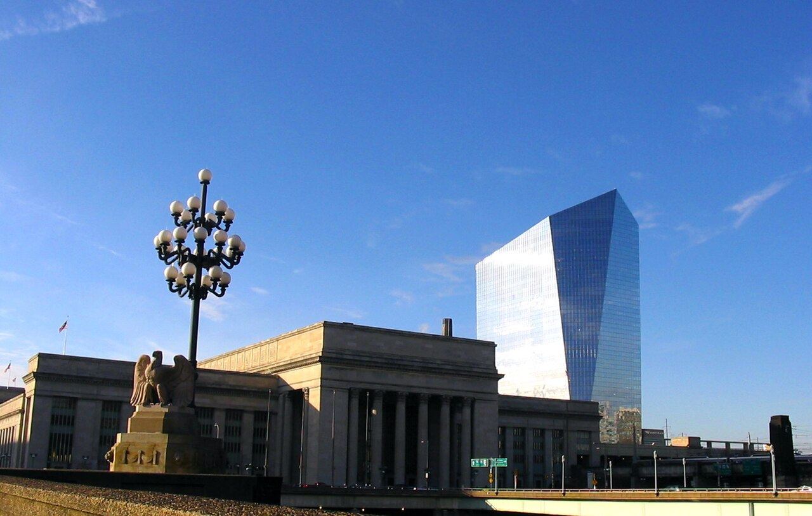
William H. Gray III 30th Street Station is a bustling Amtrak hub located in Philadelphia, serving as a vital transportation link for both regional and national travel. Renowned for its stunning Art Deco architecture, the station offers a glimpse into the city's rich history while providing modern amenities for travelers. With its central location, it is an essential part of Philadelphia's urban landscape. The station is located at 30th and Market Streets in Philadelphia. It is one of the busiest train stations in the United States, serving over 4 million passengers annually. Major Amtrak hub on the Northeast Corridor. Grand waiting room with coffered ceiling and chandeliers.
Opened in 1933, William H. Gray III 30th Street Station was designed by the architectural firm of Graham, Anderson, Probst & White. It was built to replace the older Broad Street Station and has since become a key terminal for Amtrak, SEPTA, and New Jersey Transit. The station was named in honor of William H. Gray III, a prominent African American politician and civil rights leader. Built by the Pennsylvania Railroad to replace Broad Street facilities; Art Deco details inside. The station plays a crucial role in Philadelphia's transportation network, facilitating the movement of people and goods across the region and beyond. It has been a site of significant political activity, reflecting the city's role as a transportation hub and its historical importance in the civil rights movement. Culturally, the station is a gateway to Philadelphia, showcasing the city's architectural heritage and serving as a meeting point for diverse communities. Gateway for rail travel and a civic interior landmark.
Fairmount
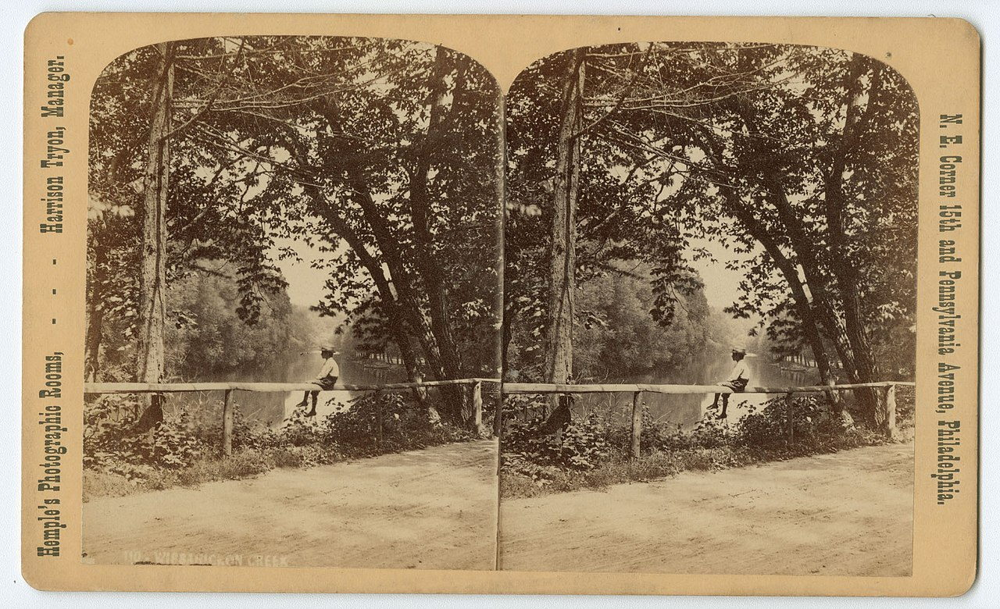
Wissahickon Valley Park is a stunning natural oasis located in the Fairmount section of Philadelphia, offering visitors a serene escape from the urban environment. With its lush landscapes, winding trails, and the picturesque Wissahickon Creek, the park is perfect for hiking, biking, and enjoying nature. The park's rich history and diverse ecosystems make it a beloved destination for both locals and tourists alike. Wissahickon Valley Park covers over 1,800 acres. The park features more than 50 miles of trails for hiking and biking. Miles of trails along steep wooded gorge. Forbidden Drive is a multi-use car-free corridor.
Wissahickon Valley Park has a rich history dating back to the 17th century when it was inhabited by the Lenape people. The area became part of Philadelphia's Fairmount Park system in the 19th century, with significant development occurring in the 1860s when the park was officially established. The park's historic structures, such as the iconic Valley Green Inn, reflect its long-standing significance as a recreational area. Preserved as parkland as the city grew around Fairmount's waterworks system. Culturally, Wissahickon Valley Park serves as an essential green space that enhances the quality of life for Philadelphia residents. It is a vital part of the city's heritage, promoting outdoor activities and community engagement. The park is also recognized for its natural beauty and biodiversity, contributing to the city's environmental conservation efforts. Premier urban wilderness hike minutes from downtown.